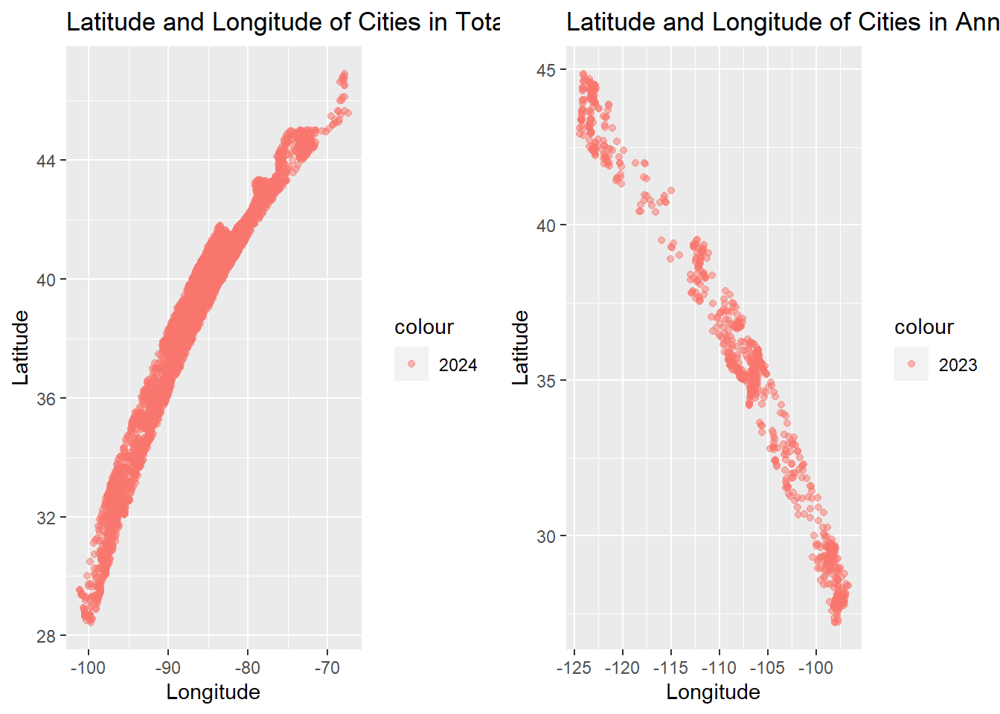
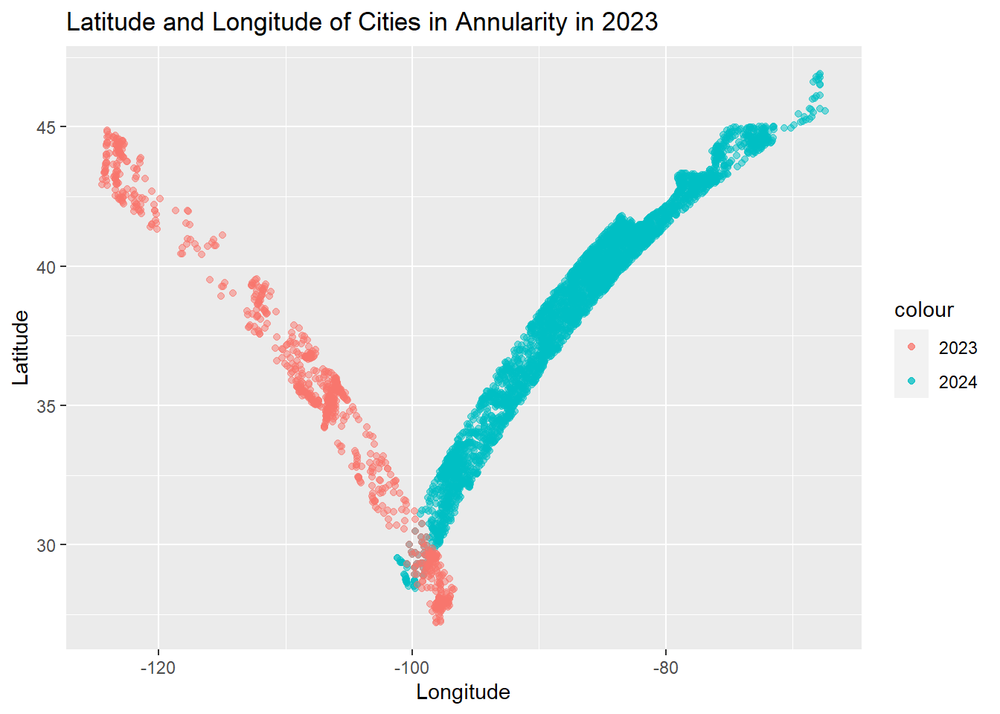
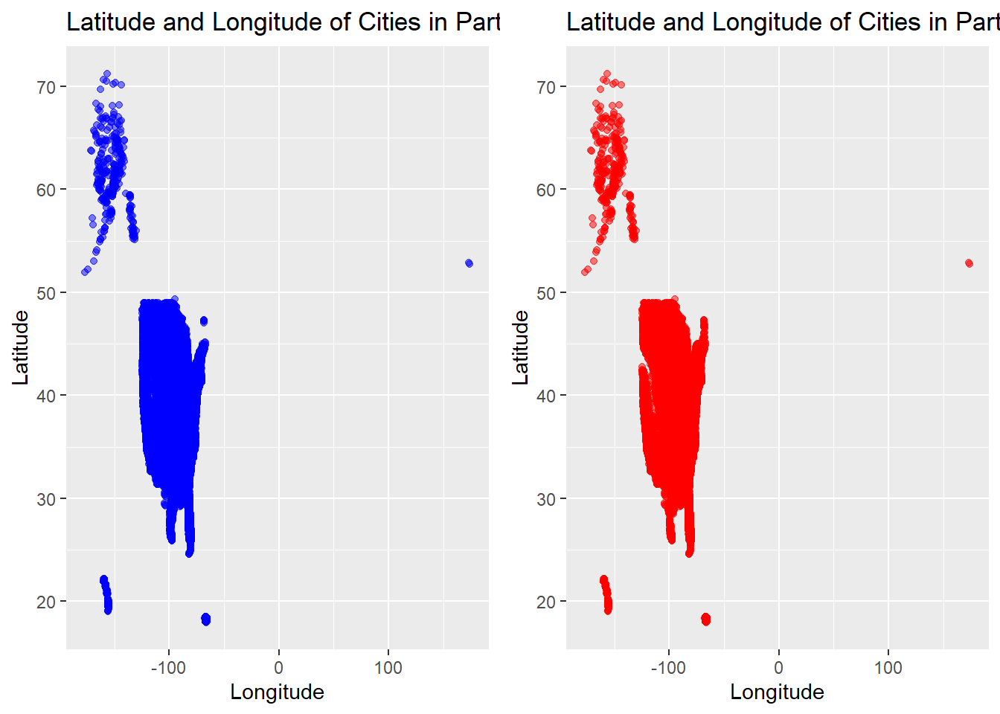
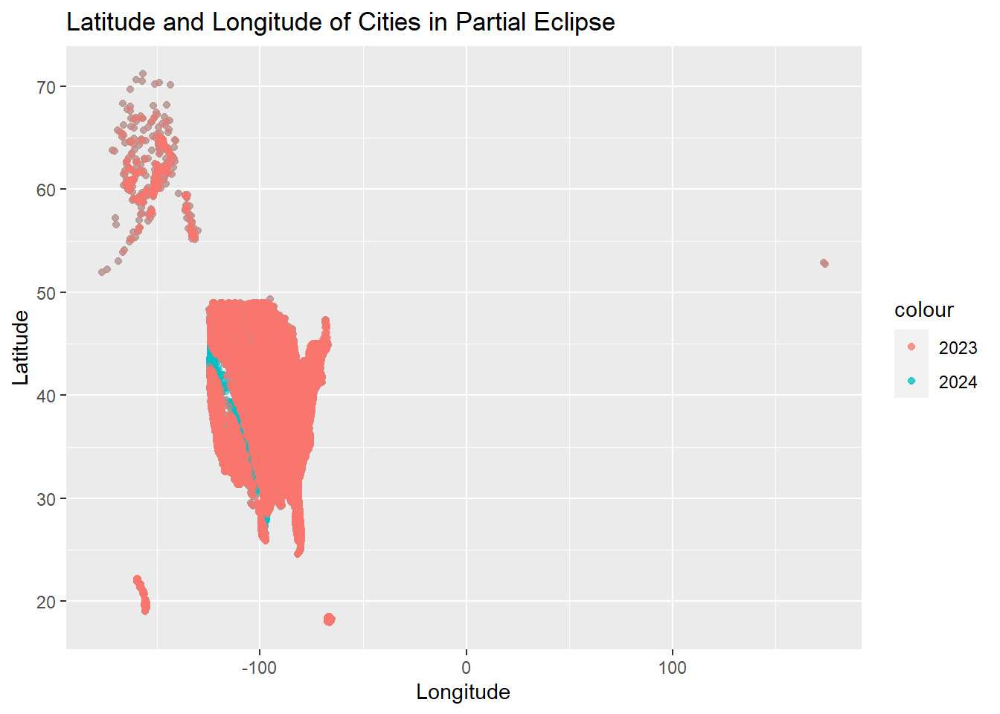
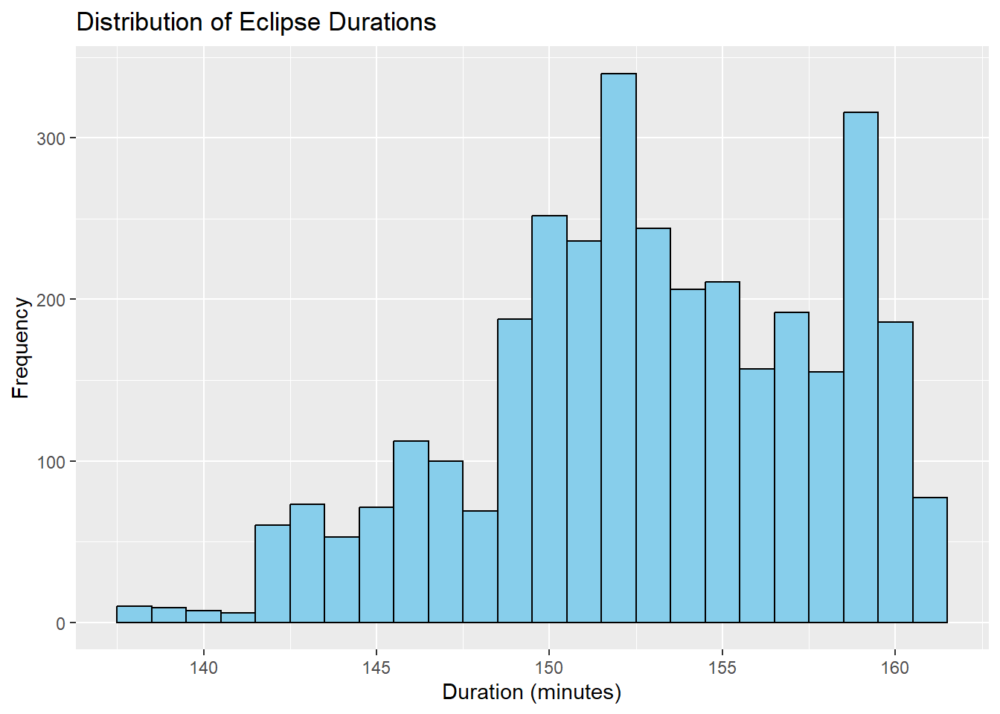
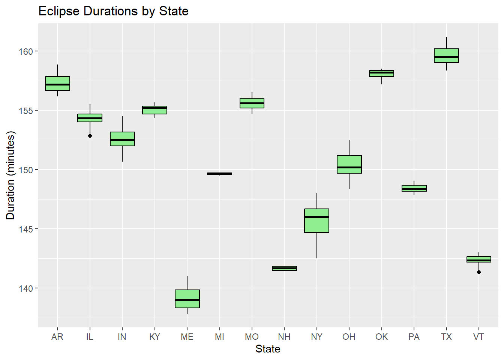
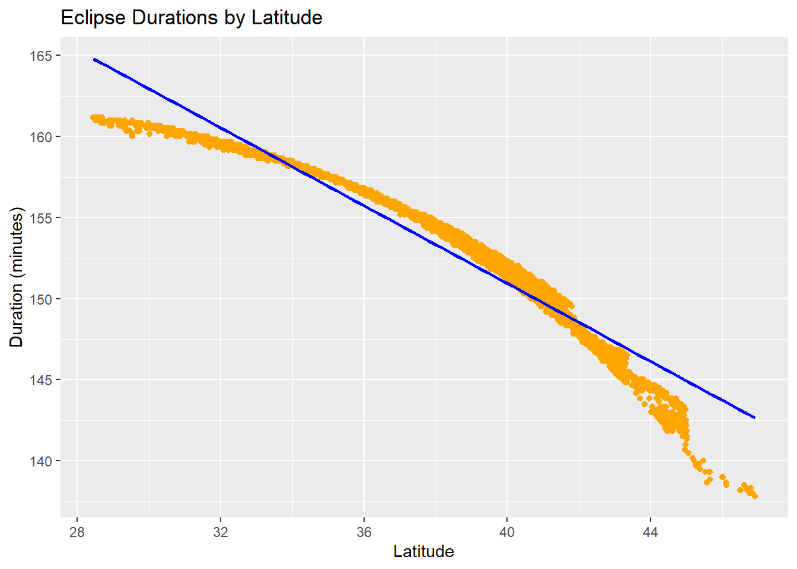
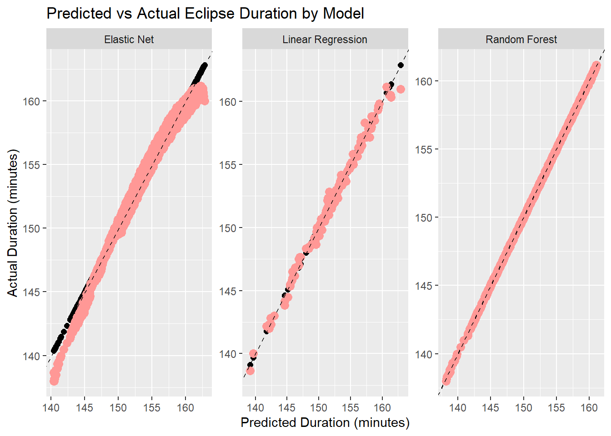
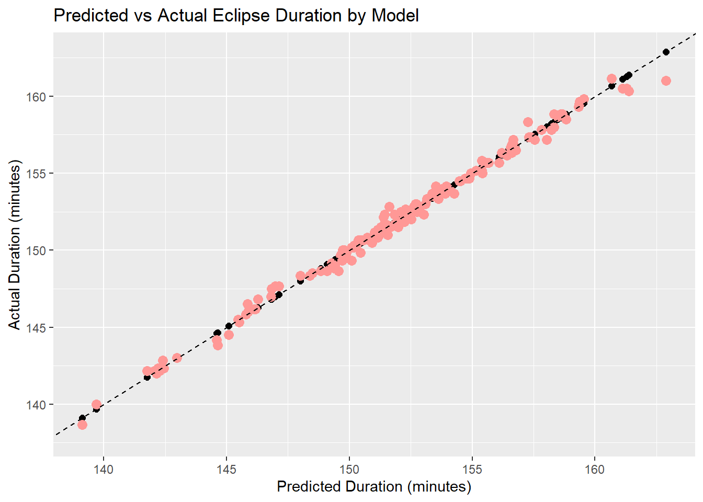

# Loading Library
library(tidyverse) # For data manipulation
library(jsonlite) # For working with JSON data
library(janitor) # For cleaning data
library(here) # For managing file paths
library(fs) # For file system operations
library(readr)
library(gridExtra)
library(ggplot2)
library(rsample)
library(tidymodels)
library(gt)
library(parsnip)Tidy Tuesday Exercise
This week exercise will be a TidyTuesday Exercise. The data is provided from the following Github Link.
The following data set showcases the path of the solar eclipse in the United States. The data was was sourced from NASA’s Scientific Visualization Studio.
Loading Data
The following lines to load and clean the data was provided in the 2024-04-09 Github’s readme markdown file. The data dictionary is also provided in the readme file. The original data is provided in a list format, which is divied up into individual data frames.
# Option 1: tidytuesdayR package
## install.packages("tidytuesdayR")
tuesdata <- tidytuesdayR::tt_load('2024-04-09')
Downloading file 1 of 4: `eclipse_annular_2023.csv`
Downloading file 2 of 4: `eclipse_total_2024.csv`
Downloading file 3 of 4: `eclipse_partial_2023.csv`
Downloading file 4 of 4: `eclipse_partial_2024.csv`# Providing a data frame for each variable of interest
eclipse_annular_2023 <- tuesdata$eclipse_annular_2023
eclipse_total_2024 <- tuesdata$eclipse_total_2024
eclipse_partial_2023 <- tuesdata$eclipse_partial_2023
eclipse_partial_2024 <- tuesdata$eclipse_partial_2024
# Setting the working directory to store the saved data
working_dir <- here("tidytuesday-exercise", "data", "2024-04-09")
# Extracting the data from the URL into an object
eclipse_cities_url_2024 <- "https://svs.gsfc.nasa.gov/vis/a000000/a005000/a005073/cities-eclipse-2024.json"
eclipse_cities_url_2023 <- "https://svs.gsfc.nasa.gov/vis/a000000/a005000/a005073/cities-eclipse-2023.json"This R script fetches JSON data for eclipse cities in 2024 and 2023 from NASA’s website, cleans and organizes the data, separates it into different categories of eclipses (total, partial, annular), and saves each category as a separate CSV file in a specified directory.
# Fetch JSON data for eclipse cities in 2024, convert to tibble, clean column names, and unnest data
eclipse_cities_2024 <- jsonlite::fromJSON(eclipse_cities_url_2024) |>
tibble::as_tibble() |>
janitor::clean_names() |>
tidyr::unnest_wider(eclipse, names_sep = "_")
# Filter 2024 data for total eclipses
eclipse_total_2024 <- eclipse_cities_2024 |>
dplyr::filter(!is.na(eclipse_6))
# Filter 2024 data for partial eclipses and remove eclipse_6 column
eclipse_partial_2024 <- eclipse_cities_2024 |>
dplyr::filter(is.na(eclipse_6)) |>
dplyr::select(-eclipse_6)
# Fetch JSON data for eclipse cities in 2023, convert to tibble, clean column names, and unnest data
eclipse_cities_2023 <- jsonlite::fromJSON(eclipse_cities_url_2023) |>
tibble::as_tibble() |>
janitor::clean_names() |>
tidyr::unnest_wider(eclipse, names_sep = "_")
# Filter 2023 data for annular eclipses
eclipse_annular_2023 <- eclipse_cities_2023 |>
dplyr::filter(!is.na(eclipse_6))
# Filter 2023 data for partial eclipses and remove eclipse_6 column
eclipse_partial_2023 <- eclipse_cities_2023 |>
dplyr::filter(is.na(eclipse_6)) |>
dplyr::select(-eclipse_6)
# Write filtered eclipse data for 2024 (total and partial) to CSV files
readr::write_csv(
eclipse_total_2024,
fs::path(working_dir, "eclipse_total_2024.csv")
)
readr::write_csv(
eclipse_partial_2024,
fs::path(working_dir, "eclipse_partial_2024.csv")
)
# Write filtered eclipse data for 2023 (annular and partial) to CSV files
readr::write_csv(
eclipse_annular_2023,
fs::path(working_dir, "eclipse_annular_2023.csv")
)
readr::write_csv(
eclipse_partial_2023,
fs::path(working_dir, "eclipse_partial_2023.csv")
)Data Exploration / Exploratory Data Analysis (EDA)
The following EDA will be used to answer the following question:
Which places are in both the 2023 path of annularity and the 2024 path of totality? Which place has the longest duration of totality in 2024?
Starting off looking at the summary and structure of the data
### Summary Statistics
# Summary statistics for eclipse data
summary(eclipse_total_2024) state name lat lon
Length:3330 Length:3330 Min. :28.45 Min. :-101.16
Class :character Class :character 1st Qu.:35.42 1st Qu.: -92.41
Mode :character Mode :character Median :39.24 Median : -86.56
Mean :38.33 Mean : -86.93
3rd Qu.:41.22 3rd Qu.: -82.31
Max. :46.91 Max. : -67.43
eclipse_1 eclipse_2 eclipse_3 eclipse_4
Length:3330 Length:3330 Length:3330 Length:3330
Class :character Class :character Class :character Class :character
Mode :character Mode :character Mode :character Mode :character
eclipse_5 eclipse_6
Length:3330 Length:3330
Class :character Class :character
Mode :character Mode :character
summary(eclipse_annular_2023) state name lat lon
Length:811 Length:811 Min. :27.22 Min. :-124.45
Class :character Class :character 1st Qu.:31.30 1st Qu.:-111.98
Mode :character Mode :character Median :35.42 Median :-106.70
Mean :35.41 Mean :-108.05
3rd Qu.:38.42 3rd Qu.:-101.36
Max. :44.87 Max. : -96.72
eclipse_1 eclipse_2 eclipse_3 eclipse_4
Length:811 Length:811 Length:811 Length:811
Class :character Class :character Class :character Class :character
Mode :character Mode :character Mode :character Mode :character
eclipse_5 eclipse_6
Length:811 Length:811
Class :character Class :character
Mode :character Mode :character
# Structure of the eclipse data
str(eclipse_total_2024)tibble [3,330 × 10] (S3: tbl_df/tbl/data.frame)
$ state : chr [1:3330] "AR" "AR" "AR" "AR" ...
$ name : chr [1:3330] "Acorn" "Adona" "Alexander" "Alicia" ...
$ lat : num [1:3330] 34.6 35 34.6 35.9 35.4 ...
$ lon : num [1:3330] -94.2 -92.9 -92.5 -91.1 -93.7 ...
$ eclipse_1: chr [1:3330] "17:30:40" "17:33:20" "17:33:20" "17:37:30" ...
$ eclipse_2: chr [1:3330] "18:15:50" "18:18:30" "18:18:30" "18:22:40" ...
$ eclipse_3: chr [1:3330] "18:47:35" "18:50:08" "18:51:09" "18:54:29" ...
$ eclipse_4: chr [1:3330] "18:51:37" "18:54:22" "18:53:38" "18:58:05" ...
$ eclipse_5: chr [1:3330] "19:23:40" "19:26:10" "19:26:20" "19:29:50" ...
$ eclipse_6: chr [1:3330] "20:08:30" "20:10:50" "20:11:10" "20:14:10" ...str(eclipse_annular_2023)tibble [811 × 10] (S3: tbl_df/tbl/data.frame)
$ state : chr [1:811] "AZ" "AZ" "AZ" "AZ" ...
$ name : chr [1:811] "Chilchinbito" "Chinle" "Del Muerto" "Dennehotso" ...
$ lat : num [1:811] 36.5 36.2 36.2 36.8 35.7 ...
$ lon : num [1:811] -110 -110 -109 -110 -109 ...
$ eclipse_1: chr [1:811] "15:10:50" "15:11:10" "15:11:20" "15:10:50" ...
$ eclipse_2: chr [1:811] "15:56:20" "15:56:50" "15:57:00" "15:56:20" ...
$ eclipse_3: chr [1:811] "16:30:29" "16:31:21" "16:31:13" "16:29:50" ...
$ eclipse_4: chr [1:811] "16:33:31" "16:34:06" "16:34:31" "16:34:07" ...
$ eclipse_5: chr [1:811] "17:09:40" "17:10:30" "17:10:40" "17:09:40" ...
$ eclipse_6: chr [1:811] "18:02:10" "18:03:20" "18:03:30" "18:02:00" ...Plotting the latitude and longitude in a scatter plot for the 2023 and 2024 Eclipse.
# Plotting the latitude and longitude of eclipse cities for 2024
p1 <- ggplot(eclipse_total_2024, aes(x = lon, y = lat)) +
geom_point(aes(color = "2024"), alpha = 0.5) + # Set color aesthetic to differentiate by year
labs(title = "Latitude and Longitude of Cities in Totality in 2024",
x = "Longitude",
y = "Latitude")
# Plotting the latitude and longitude of eclipse cities for 2023
p2 <- ggplot(eclipse_annular_2023, aes(x = lon, y = lat)) +
geom_point(aes(color = "2023"), alpha = 0.5) + # Set color aesthetic to differentiate by year
labs(title = "Latitude and Longitude of Cities in Annularity in 2023",
x = "Longitude",
y = "Latitude")
# Displaying side-by-side plots
grid.arrange(p1, p2, ncol = 2)
# Overlaying the graph
overlay <- p1 +
geom_point(data = eclipse_annular_2023, aes(color = "2023"), alpha = 0.5) + # Set color aesthetic to differentiate by year
labs(title = "Latitude and Longitude of Cities in Annularity in 2023",
x = "Longitude",
y = "Latitude")
overlay
Based on the visual of the overlap plot, the trajectory of both eclipses overlap around 30 latitude and -100 longitude. When reviewing the data set for those trajectory, cities like San Antonio or San Angelo are found in those coordinates.
I then proceed to plot the partial eclipse data for 2023 and 2024.
# Plotting the latitude and longitude of eclipse cities for 2024
p3 <- ggplot(eclipse_partial_2024, aes(x = lon, y = lat)) +
geom_point(color = "blue", alpha = 0.5) +
labs(title = "Latitude and Longitude of Cities in Partial Eclipse in 2024",
x = "Longitude",
y = "Latitude")
# Plotting the latitude and longitude of eclipse cities for 2023
p4 <- ggplot(eclipse_partial_2023, aes(x = lon, y = lat)) +
geom_point(color = "red", alpha = 0.5) +
labs(title = "Latitude and Longitude of Cities in Partial Eclipse in 2023",
x = "Longitude",
y = "Latitude")
# Displaying side-by-side plots
grid.arrange(p3, p4, ncol = 2)
# Overlaying the graph
overlay2 <- ggplot(eclipse_partial_2024, aes(x = lon, y = lat, color ="2024")) +
geom_point(aes(color = "2024"), alpha = 0.5) +
geom_point(data = eclipse_partial_2023, aes(color = "2023"), alpha = 0.5) + # Set color aesthetic to differentiate by year
labs(title = "Latitude and Longitude of Cities in Partial Eclipse",
x = "Longitude",
y = "Latitude")
overlay2
When looking at the overlayed data, you can see that the path that was taken was fairly similar from year-to-year, and unlike the total and annualar eclipse, the path did not follow a trajectory and remain in certain clusters.
I then wanted to see how the duration of the eclipse looked, so I created a new column that calculated the difference between the last time of sighting with the variable containing the time of the first sighting.
# Convert eclipse_1 and eclipse_6 to datetime objects
eclipse_total_2024$eclipse_1 <- as.POSIXct(eclipse_total_2024$eclipse_1, format = "%H:%M:%S")
eclipse_total_2024$eclipse_6 <- as.POSIXct(eclipse_total_2024$eclipse_6, format = "%H:%M:%S")
# Calculate eclipse duration by finding the difference between the latest time (eclipse_6) the eclipse was occuring and the first time (eclipse_1)
eclipse_total_2024 <- eclipse_total_2024 %>%
mutate(eclipse_duration = as.numeric(difftime(eclipse_6, eclipse_1, units = "mins")))
# Explore the structure and summary statistics of the data
str(eclipse_total_2024)tibble [3,330 × 11] (S3: tbl_df/tbl/data.frame)
$ state : chr [1:3330] "AR" "AR" "AR" "AR" ...
$ name : chr [1:3330] "Acorn" "Adona" "Alexander" "Alicia" ...
$ lat : num [1:3330] 34.6 35 34.6 35.9 35.4 ...
$ lon : num [1:3330] -94.2 -92.9 -92.5 -91.1 -93.7 ...
$ eclipse_1 : POSIXct[1:3330], format: "2024-04-12 17:30:40" "2024-04-12 17:33:20" ...
$ eclipse_2 : chr [1:3330] "18:15:50" "18:18:30" "18:18:30" "18:22:40" ...
$ eclipse_3 : chr [1:3330] "18:47:35" "18:50:08" "18:51:09" "18:54:29" ...
$ eclipse_4 : chr [1:3330] "18:51:37" "18:54:22" "18:53:38" "18:58:05" ...
$ eclipse_5 : chr [1:3330] "19:23:40" "19:26:10" "19:26:20" "19:29:50" ...
$ eclipse_6 : POSIXct[1:3330], format: "2024-04-12 20:08:30" "2024-04-12 20:10:50" ...
$ eclipse_duration: num [1:3330] 158 158 158 157 157 ...summary(eclipse_total_2024) state name lat lon
Length:3330 Length:3330 Min. :28.45 Min. :-101.16
Class :character Class :character 1st Qu.:35.42 1st Qu.: -92.41
Mode :character Mode :character Median :39.24 Median : -86.56
Mean :38.33 Mean : -86.93
3rd Qu.:41.22 3rd Qu.: -82.31
Max. :46.91 Max. : -67.43
eclipse_1 eclipse_2 eclipse_3
Min. :2024-04-12 17:10:20.00 Length:3330 Length:3330
1st Qu.:2024-04-12 17:34:50.00 Class :character Class :character
Median :2024-04-12 17:49:35.00 Mode :character Mode :character
Mean :2024-04-12 17:46:53.75
3rd Qu.:2024-04-12 17:58:10.00
Max. :2024-04-12 18:22:50.00
eclipse_4 eclipse_5 eclipse_6
Length:3330 Length:3330 Min. :2024-04-12 19:51:20.00
Class :character Class :character 1st Qu.:2024-04-12 20:11:52.50
Mode :character Mode :character Median :2024-04-12 20:22:20.00
Mean :2024-04-12 20:19:50.44
3rd Qu.:2024-04-12 20:28:10.00
Max. :2024-04-12 20:41:30.00
eclipse_duration
Min. :137.8
1st Qu.:149.8
Median :152.8
Mean :152.9
3rd Qu.:157.2
Max. :161.2 length(unique(eclipse_total_2024$state)) # shows number of states in this dataframe variable[1] 14length(unique(eclipse_total_2024$name)) # shows number of cities in this dataframe variable[1] 2938# Histogram of eclipse durations
p5 <- ggplot(eclipse_total_2024, aes(x = eclipse_duration)) +
geom_histogram(binwidth = 1, fill = "skyblue", color = "black") +
labs(title = "Distribution of Eclipse Durations",
x = "Duration (minutes)",
y = "Frequency")
# Boxplot of eclipse durations by state
p6 <- ggplot(eclipse_total_2024, aes(x = state, y = eclipse_duration)) +
geom_boxplot(fill = "lightgreen", color = "black") +
labs(title = "Eclipse Durations by State",
x = "State",
y = "Duration (minutes)")
# Scatter plot of eclipse durations by latitude
p7 <- ggplot(eclipse_total_2024, aes(x = lat, y = eclipse_duration)) +
geom_point(color = "orange") +
geom_smooth(method = "lm", se = FALSE, color = "blue") +
labs(title = "Eclipse Durations by Latitude",
x = "Latitude",
y = "Duration (minutes)")
# Viewing both plots
plot(p5)
plot(p6) 
plot(p7)
When viewing the following plots, there is a lot of suggestions that there are great variations in eclipse duration over several different types of variables.
Formulating Question/Hypothesis
QUESTION: Is there a difference in the duration of a total solar eclipses between different regions or latitudes?
Based on the EDA, I just performed, we can see suggestions that the duration is relative to the location of the eclipse.
MY HYPOTHESIS: Based on some preliminary visuals performed in the EDA, I believe that the duration of the total solar eclipse is significantly different from region-to-region. I theorize that the states/territories more farther North experiences a much short total solar eclipse compared to their southern cousins.
I start off with performing some basic statistical techniques. ANOVA is used to compare the mean across multiple groups to determine if there are an statistically significant difference between them. The linear model is used
# Perform ANOVA to test for differences in eclipse durations between regions
anova_model <- aov(eclipse_duration ~ state, data = eclipse_total_2024)
summary(anova_model) Df Sum Sq Mean Sq F value Pr(>F)
state 13 78870 6067 8382 <2e-16 ***
Residuals 3316 2400 1
---
Signif. codes: 0 '***' 0.001 '**' 0.01 '*' 0.05 '.' 0.1 ' ' 1# Fit linear regression model to explore relationship between latitude and eclipse durations
lm_model <- lm(eclipse_duration ~ lat, data = eclipse_total_2024)
summary(lm_model)
Call:
lm(formula = eclipse_duration ~ lat, data = eclipse_total_2024)
Residuals:
Min 1Q Median 3Q Max
-5.5884 -0.6381 0.4714 0.9516 1.5748
Coefficients:
Estimate Std. Error t value Pr(>|t|)
(Intercept) 198.954653 0.213921 930.0 <2e-16 ***
lat -1.200415 0.005551 -216.2 <2e-16 ***
---
Signif. codes: 0 '***' 0.001 '**' 0.01 '*' 0.05 '.' 0.1 ' ' 1
Residual standard error: 1.274 on 3328 degrees of freedom
Multiple R-squared: 0.9336, Adjusted R-squared: 0.9335
F-statistic: 4.676e+04 on 1 and 3328 DF, p-value: < 2.2e-16The results from both the ANOVA table and the linear regression model strongly support the hypothesis that there is a significant difference in eclipse duration between regions or latitudes. The ANOVA analysis shows a highly significant difference in eclipse duration across different states, with the “state” variable being a significant predictor. This implies substantial variability in eclipse duration between different geographic areas. Similarly, the linear regression model highlights a significant relationship between latitude and eclipse duration, with latitude serving as a significant predictor of this difference. These findings suggest that eclipse duration varies notably across different latitudes or regions, with latitude playing a crucial role in determining the duration of a solar eclipse.
I’m going to proceed to investigate this with machine learning models to truly confirm this.
Pre-processing and Splitting Data
I start with preparing my training and test data sets by splitting it. I also created a new data frame selecting certain variables that I require, for further ease when I am fitting models to it later.
# Set Seed for reproducibility
rngseed = 1234
set.seed(rngseed)
# Create a new data frame with selected variables
total_eclipse_df <- subset(eclipse_total_2024, select = c(lat, lon, state, name, eclipse_duration))
# Create training data by alloting 3/4 of the data for training
data_split <- initial_split(total_eclipse_df, prop = 3/4)
# Create data frames for the two sets:
train_data <- training(data_split)
test_data <- testing(data_split)Model Fitting
I going to fit the train_data data using tidymodels with eclipse_duration as my main predictor and with predictors, such as: latitude, longitude, state, and city.
Linear Regression Model
I start off with Linear Regression because it’s a straightforward and interpretable model that allows me to quantify the direct relationship between latitude and eclipse duration.
# Split the data into training and testing sets
set.seed(rngseed) # for reproducibility
# Create a recipe
recipe <- recipe(eclipse_duration ~ . , data = train_data)
# Specify the linear regression model
lm_model <-
linear_reg() %>%
set_engine("lm") %>%
set_mode("regression")
# Define a workflow
lm_workflow <- workflow() %>%
add_recipe(recipe) %>%
add_model(lm_model)
# Train the model
lm_trained_model <- lm_workflow %>%
fit(data = train_data)
# Make predictions on the testing set
lm_predictions <- predict(lm_trained_model, new_data = test_data) %>%
bind_cols(test_data)
# Set rank-deficient predictions to NA
lm_predictions[is.na(lm_predictions)] <- NARandom Forest Regression Model
Random forest regression is ideal because it can capture complex interactions and nonlinear relationships between latitude and other predictors, which can be helpful, should the linear model not fit well.
# Split the data into training and testing sets
set.seed(rngseed) # for reproducibility
# Create a recipe
recipe <- recipe(eclipse_duration ~ . , data = train_data)
# Specify the random forest model
rf_model <-
rand_forest(trees = 500, mode = "regression") %>%
set_engine("ranger") # Use the ranger backend for random forest
# Define a workflow
rf_workflow <-
workflow() %>%
add_recipe(recipe) %>%
add_model(rf_model)
# Train the model
trained_model <-
rf_workflow %>%
fit(data = train_data)
# Make predictions
rf_predictions <- predict(trained_model, train_data) %>%
bind_cols(train_data)Elastic Net Regression
I imagine there may potentially be an issue with collinearity, so I proceeded to use Elastic Net Regression, as it can address multicollinearity issues by simultaneously performing variable selection and regularization, allowing me to identify and mitigate the impact of correlated predictors on the model’s performance.
# Split the data into training and testing sets
set.seed(rngseed) # for reproducibility
# Exclude non-numeric columns from the predictors
train_data_numeric <- select(train_data, -state, -name)
# Convert the data to a matrix
x_matrix <- model.matrix(eclipse_duration ~ . , data = train_data_numeric)
# Create a recipe
enet_recipe <- recipe(eclipse_duration ~ . , data = train_data_numeric)
# Specify the Elastic Net regression model
enet_model <- linear_reg(penalty = 0.1, mixture = 0.5) %>%
set_engine("glmnet", x = x_matrix) # Use the glmnet backend for Elastic Net regression
# Define a workflow
enet_workflow <- workflow() %>%
add_recipe(enet_recipe) %>%
add_model(enet_model)
# Train the model
enet_trained_model <- enet_workflow %>%
fit(data = train_data_numeric)
# Make predictions
enet_predictions <- predict(enet_trained_model, new_data = train_data_numeric) %>%
bind_cols(train_data)Model Evaluation
I then decided to measure the model’s performance by three metrics:
RMSE
R^2
and MAE
# Calculate metrics for each model
lm_metrics <- metrics(lm_predictions, truth = eclipse_duration, estimate = .pred) %>%
filter(.metric %in% c("rmse", "mae", "rsq")) %>%
mutate(model = "Linear Model")
rf_metrics <- metrics(rf_predictions, truth = eclipse_duration, estimate = .pred) %>%
filter(.metric %in% c("rmse", "mae", "rsq")) %>%
mutate(model = "Random Forest")
enet_metrics <- metrics(enet_predictions, truth = eclipse_duration, estimate = .pred) %>%
filter(.metric %in% c("rmse", "mae", "rsq")) %>%
mutate(model = "Elastic Net")
# Combine results into a single data frame
all_metrics <- bind_rows(lm_metrics, rf_metrics, enet_metrics) %>%
mutate(Metric = .metric, Value = .estimate, Model = model) %>%
select(Model, Metric, Value)
# Combine results into a single data frame, pivot, and rename columns in one pipeline
all_metrics_wide <- bind_rows(lm_metrics, rf_metrics, enet_metrics) %>%
mutate(Metric = .metric, Value = .estimate, Model = model) %>%
select(Model, Metric, Value) %>%
pivot_wider(names_from = Metric, values_from = Value) %>%
rename("RMSE" = "rmse", "R-squared" = "rsq", "MAE" = "mae")
# View the combined results
gt(all_metrics_wide)| Model | RMSE | R-squared | MAE |
|---|---|---|---|
| Linear Model | 0.40600468 | 0.9925530 | 0.29855505 |
| Random Forest | 0.04329098 | 0.9999220 | 0.03338128 |
| Elastic Net | 0.65616265 | 0.9823677 | 0.52168806 |
The Random Forest model appears to perform the best based on RMSE and R-squared, indicating lower errors and better fit to the data. The Linear Model also shows good performance, with slightly higher RMSE and R-squared compared to Random Forest. The Elastic Net model has the highest RMSE and lowest R-squared, indicating poorer performance compared to the other two models.
I then proceed to plot the predictions vs the observed to visually see how well the model performed.
# Combine all predictions into one dataframe
all_predictions <- bind_rows(
mutate(lm_predictions, Model = "Linear Regression"),
mutate(rf_predictions, Model = "Random Forest"),
mutate(enet_predictions, Model = "Elastic Net")
)
# Plotting predicted vs actual duration faceted by model
p8 <- ggplot(all_predictions, aes(x = .pred, y = eclipse_duration)) +
geom_point(aes(y = .pred), color = "black", size= 2) +
geom_point(aes(y = eclipse_duration), color = "#ff9896", size= 3)+
geom_abline(intercept = 0, slope = 1, linetype = "dashed") +
labs(title = "Predicted vs Actual Eclipse Duration by Model",
x = "Predicted Duration (minutes)",
y = "Actual Duration (minutes)") +
facet_wrap(~ Model, scales = "free") # Facet by model with free scales
plot(p8)
When visualizing the plot, the Random Forest model prediction most clearly aligns with the observed values.
Summary and Best Model
In assessing the performance of three regression models—Random Forest, Linear, and Elastic Net—in predicting the duration of total solar eclipses across various regions or latitudes, the Random Forest model emerges as the most effective. With a low root mean squared error (RMSE) and high R-squared value, the Random Forest model demonstrates superior predictive accuracy and a strong fit to the data.This aligns with the hypothesis that differences exist in eclipse duration across different geographic areas.
While the Linear Model also performs reasonably well, its performance may be limited by its inability to capture nonlinear relationships. Conversely, the Elastic Net Model shows the weakest performance, indicating potential challenges in capturing the complexity of predictor variables’ influence on eclipse duration. Overall, the Random Forest model’s effectiveness suggests promising potential for accurately predicting eclipse duration and discerning regional differences, thus affirming the hypothesis.
As all three models have performed fairly well, I proceed with the cross-validation test without further tuning needed.
Using the Test Data
The true test to determine how well my model perform is to test it against the untouched test_data, so I created a prediction on that test data using the previously trained model.
# Evaluate the model on the test data
test_predictions <- predict(lm_trained_model, new_data = test_data) %>%
bind_cols(test_data)
# Calculate metrics for the random forest model on the test data
rf_test_metrics <- metrics(rf_predictions, truth = eclipse_duration, estimate = .pred) %>%
filter(.metric %in% c("rmse", "mae", "rsq")) %>%
mutate(Model = "Random Forest")
# Pivot the test metrics data frame to wide format and rename columns
rf_test_metrics_wide <- rf_test_metrics %>%
pivot_wider(names_from = .metric, values_from = .estimate) %>%
rename("RMSE" = "rmse", "R-squared" = "rsq", "MAE" = "mae") %>%
select(-.estimator) # Remove the .estimator column
# Print the test metrics
gt(rf_test_metrics_wide)| Model | RMSE | R-squared | MAE |
|---|---|---|---|
| Random Forest | 0.04329098 | 0.999922 | 0.03338128 |
These metrics indicate that the model’s predictions are very close to the actual values, with a high level of explained variance (R-squared) and low errors (RMSE and MAE). Overall, this suggests that the Random Forest model is a strong performer even for the test_data.
# Plot predictions vs. actual values on the test data
ggplot(test_predictions, aes(x = .pred, y = eclipse_duration)) +
geom_point(aes(y = .pred), color = "black", size= 2) +
geom_point(aes(y = eclipse_duration), color = "#ff9896", size= 3)+
geom_abline(intercept = 0, slope = 1, linetype = "dashed") +
labs(title = "Predicted vs Actual Eclipse Duration by Model",
x = "Predicted Duration (minutes)",
y = "Actual Duration (minutes)")
The plot close alignment to the diagonal line suggest it’s a good fit with minimal noise, thus further proving it is a well-performing model. It suggests that the Random Forest algorithm has effectively captured the underlying patterns in the data, leading to accurate predictions. This aligns with the performance metrics that is observed.
Discussion and Conclusion
In this exercise, I explored performed this week’s TidyTuesday dataset that dealt with the solar eclipse behavior of the past two year.
I investigated the duration of total solar eclipses across different regions or latitudes, aiming to test the hypothesis that there is a significant difference in eclipse duration between these areas.
I began by performing exploratory data analysis, which included visualizations of eclipse paths and duration distributions. Based on this initial exploration, I hypothesized that regions farther north might experience shorter eclipse durations compared to those farther south.
To test this hypothesis, I employed three different regression models: Linear Regression, Random Forest Regression, and Elastic Net Regression. The machine learning models provided insights into how well the predictors influenced the eclipse duration, with the Random Forest model exhibiting high predictive accuracy.
| ML Model on Training Data | |||
| Model | RMSE | R-squared | MAE |
|---|---|---|---|
| Linear Model | 0.40600468 | 0.9925530 | 0.29855505 |
| Random Forest | 0.04329098 | 0.9999220 | 0.03338128 |
| Elastic Net | 0.65616265 | 0.9823677 | 0.52168806 |
Overall, the findings suggest that both latitude and region significantly influence eclipse duration.
When performing the same steps on the test_data, similar results and performance was replicated.
| Random Forest Model on Test Data | |||
| Model | RMSE | R-squared | MAE |
|---|---|---|---|
| Random Forest | 0.04329098 | 0.999922 | 0.03338128 |